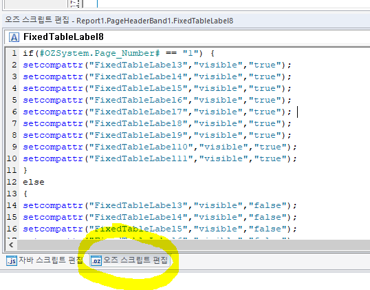

첫 페이지만 안나오게
- 오즈스크립트
// 오즈 스크립트 편집 에 해야함
if(#OZSystem.Page_Number# == "1") {
setcompattr("FixedTableLabel3","visible","true");
setcompattr("FixedTableLabel4","visible","true");
setcompattr("FixedTableLabel5","visible","true");
setcompattr("FixedTableLabel6","visible","true");
setcompattr("FixedTableLabel7","visible","true");
setcompattr("FixedTableLabel8","visible","true");
setcompattr("FixedTableLabel9","visible","true");
setcompattr("FixedTableLabel10","visible","true");
setcompattr("FixedTableLabel11","visible","true");
}
else
{
setcompattr("FixedTableLabel3","visible","false");
setcompattr("FixedTableLabel4","visible","false");
setcompattr("FixedTableLabel5","visible","false");
setcompattr("FixedTableLabel6","visible","false");
setcompattr("FixedTableLabel7","visible","false");
setcompattr("FixedTableLabel8","visible","false");
setcompattr("FixedTableLabel9","visible","false");
setcompattr("FixedTableLabel10","visible","false");
setcompattr("FixedTableLabel11","visible","false");
}

// 제뉴인 참고 (해보진 않음)
var objPage = ReportTemplate.GetCurrentPage();
var PageInfo = objPage.GetPageIndex() + 1 ; // 현재페이지
if (PageInfo != 1 ) // 첫페이지 외에는 숨기기
{
This.SetVisible(false);
This.SetPrintable(false);
}
- 자바스크립트
// 페이지헤더에 사용하니 안 먹는 현상 => 오즈 스크립트로 해결
var page=This.GetDataSetValue("OZSystem.Page_Number"); // 페이지번호 가져오기
if (page > 1 ) // 페이지가 1보다 클때
{
This.SetEnable(false); // 숨기기 false
}